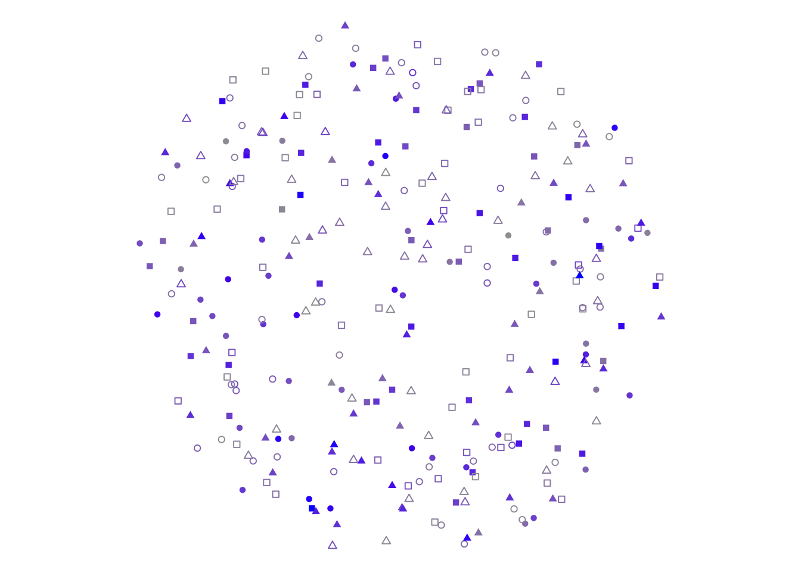
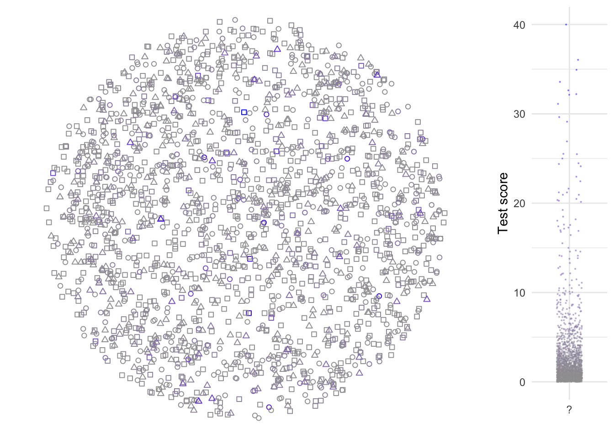
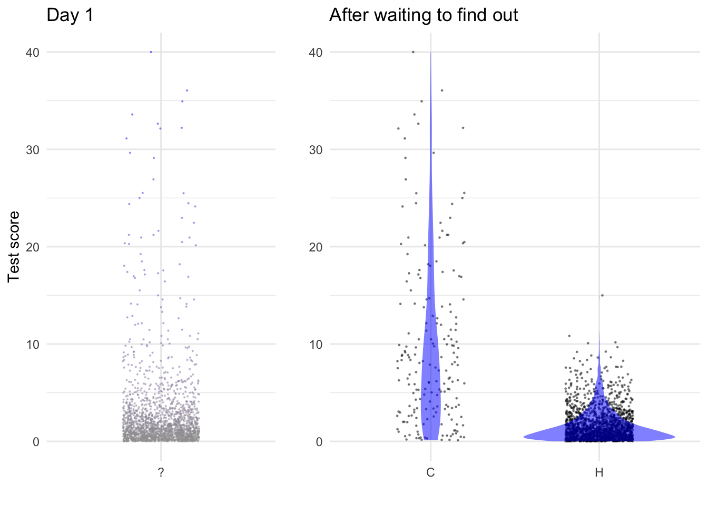
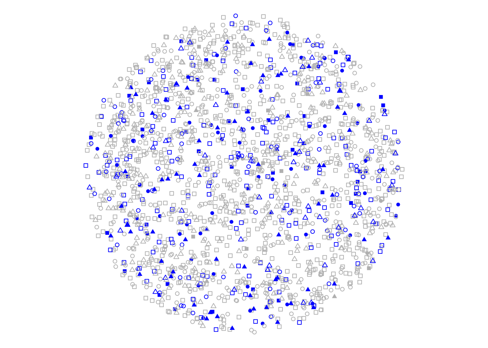
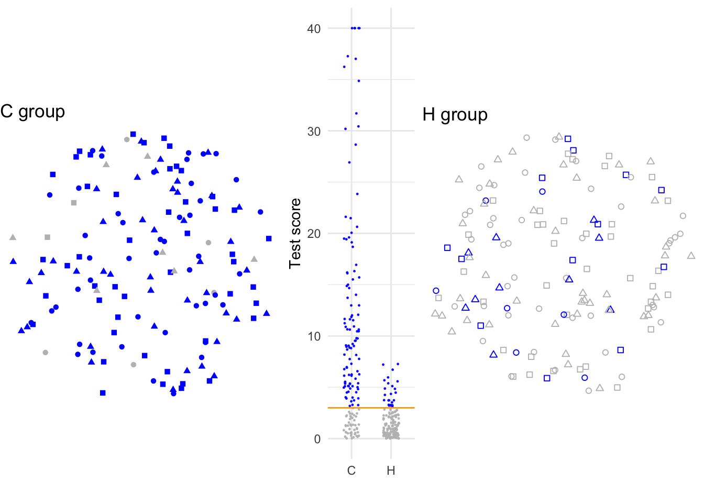
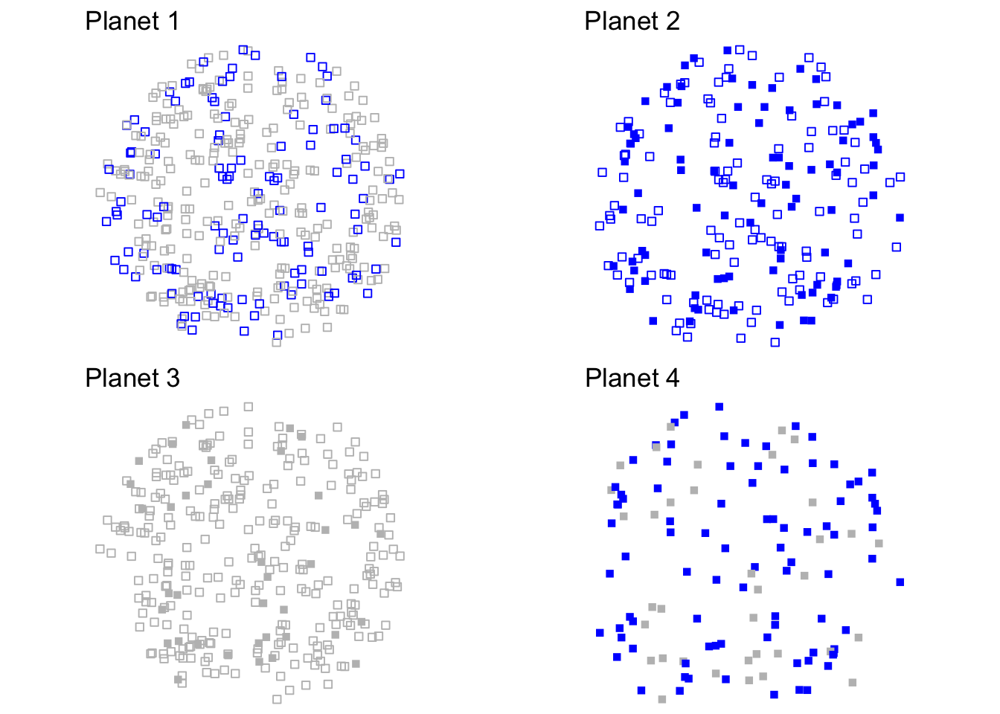
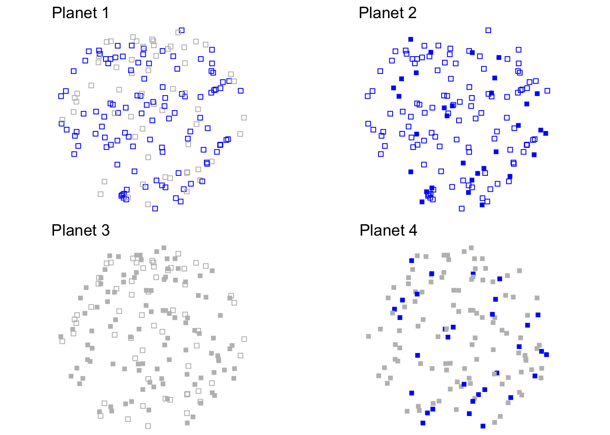

Constructing a classifier
There are many yes-or-no conditions. A patient has a disease or does not. A credit-card transaction is genuine or fraudulent.
But it is not straightforward to figure out at the time the patient comes to the clinic or the credit-card transaction is made, whether the condition is yes or no. If we could wait, the condition might reveal itself: the patient gets critically ill or the credit-hard holder complains about an unauthorized charge. But we can’t wait. We want to treat the patient before he or she gets critically ill. We want to block the credit-card transaction before it is completed.
Instead of waiting, we measure whatever relevant variables we can when the patient arrives at the clinic or the credit-card transaction has been submitted for approval. For the patient, we might look at the concentration of specific markers for cancer in the blood. For the transaction, we might look at the shipping address to see if it matches the credit-card holder’s genuine address. Such variables may provide an indication, imperfect though it may be, of whether the condition is yes or no.
A classifier is a statistical model used to predict the unknown outcome of a yes-or-no situation from information that is already available. This Lesson concerns three closely related topics about classifiers: how we collect data for training the model, how we summarize the performance of the classifier, and how we “tune” the classifier.
To help keep things straight, we will write the output of the classifier as + or -; a positive or a negative test result. But the actual condition of the person will be denoted C or H, as in “you have the Condition or you are Healthy.
Collecting useful data
Consider this news report and note the time lag between collection of the dietary explanatory variables and the response variable—whether the patient developed pancreatic cancer.
Higher vitamin D intake has been associated with a significantly reduced risk of pancreatic cancer, according to a study released last week. Researchers combined data from two prospective studies that included 46,771 men ages 40 to 75 and 75,427 women ages 38 to 65. They identified 365 cases of pancreatic cancer over 16 years. Before their cancer was detected, subjects filled out dietary questionnaires, including information on vitamin supplements, and researchers calculated vitamin D intake. After statistically adjusting1 for age, smoking, level of physical activity, intake of calcium and retinol and other factors, the association between vitamin D intake and reduced risk of pancreatic cancer was still significant. Compared with people who consumed less than 150 units of vitamin D a day, those who consumed more than 600 units reduced their risk by 41 percent. - New York Times, 19 Sept. 2006, p. D6.
This was not an experiment; it was an observational study without any intervention to change anyone’s diet.
In building a classifier, we have a similar situation. Perhaps we can perform the blood test today, but that gives us only the test result, not the subject’s true condition. We might have to wait years for that condition to reveal itself. Only at that point can we measure the performance of the classifier.
To picture the situation, let’s imagine many people in the world, some of whom have the condition and some who don’t. On Day 1 of the study, we test everyone and get raw score on a scale from 0 to 40. The results are shown in Figure 1. Each glyph is a person. The varying locations are meant to help us later on; for now, just think of them as representing where each person lives in the world. The different shapes of glyph—circle, square, triangle—are meant to remind you that people are different from one another in age, gender, risk-factors, etc.
Each person took a blood test. The raw result from that test is a score from 0 to 40. The distribution of scores is shown in the right panel of the figure. We also show the score in the world-plot; the higher the raw score, the more blue the glyph. On Day 1, it isn’t known who has the condition and who does not.

Having recorded the raw test results for each person, we wait. In the pancreatic cancer study, they waited 16 years for the cancer to reveal itself. After the waiting period, we can add a new column to the original data; whether the person has the condition (C) or doesn’t (H). In Figure 2 people who developed the condition have been re-drawn with filled glyphs to make them easier to spot.
Only now, when we have found out the C-or-H state of each person, can we compare the raw scores on the blood test for those were found to have the condition and those who were not.
Setting the threshold for +

At the end of year 16, we can now divide the study participants into two groups: those who developed the condition and those who didn’t.
Figure 3 shows the distribution of raw test scores. The values are those recorded on Day 1, but after waiting to find out the patients’ conditions, we can subdivide them into those who have the condition (C) and those who don’t (H).
The classifier we aim to build is not yet complete, even though we have all the data we need. To finish the classifier, we need to identify a “threshold score.” Raw scores above this threshold will generate a + test; scores below the threshold generate a - test.
False positives and false negatives
Since each individual person is either C or H, and each has a test result that is + or -, we can divide the people into four distinct groups.
C with a + test: This is called a “true positive”, since the test was + (that is, positive) and the test was right.
H with a + test: This is a “false positive”; the test was + (positive) but wrong (false).
H with a - test: A “true negative”
C with a - test: A “false negative”
It is you, the modeler, who decides what the threshold should be. In setting it, you have two objectives that happen to conflict. You want to avoid both false negatives and false positives. You do this by setting the threshold low enough that a large fraction of the people in column C are above the threshold. Those below the threshold are the false negatives. But you also want to set the threshold low enough so that only a small fraction of the people in column H are above the threshold—such people are false positives.
The Loss Function
In order to set the threshold at an optimal level, it is important to measure the impact of the positive or negative test result. This impact of course will depend on whether the test is right or wrong about the person’s true condition. It is conventional to measure the impact as a “loss,” that is, the amount of harm that is done.
If the test result is right, there’s no loss. Of course, it’s not nice that a person is C, but a + test result will steer our actions to treat the condition appropriately: no loss in that.
Typically, the loss of a false negative is reckoned as more than the loss of a false positive. A false negative will lead to failure to treat the person for a condition that he or she actually has.
In contrast, a false positive will lead to unnecessary treatment. This also is a loss that includes several components that would have been avoided if the test had be right. The cost of the treatment itself is one part of the loss. The harm that a treatment might do is another part of the loss. And the anxiety that the person and his or her family go through is still another part of the loss. These losses are not necessarily small. The woman who gets a false positive breast-cancer diagnosis will suffer from the effects of chemotherapy and the loss of breast tissue. The man who gets a false-positive prostate-cancer diagnosis may end up with urinary incontinence and impotence.
The aim in setting the threshold is to minimize the total loss. This will be the loss incurred due to false negative times the number of false negatives plus the loss incurred from a false positive times the number of false positives.
The term “loss function” is used to describe how the loss depends on whether the outcome is a false negative or a false positive.
However, as you’ll see in Lesson 35, the number of false positives and false negatives depends on the “prevalence” of the condition. This can differ from group to group or location to location. Until we know the relevant prevalence and the loss function, we can’t sensibly pick a threshold.
Test performance
As pointed out above, to know the impact of the test you need to know both the loss function and the prevalence. Even so, there is a simple way to describe the performance of the test itself that will enable us to apply the test optimally for any prevalence or loss function.
Assume for the moment that we have already selected a threshold that turns the raw score from the test into the + or - final result from the test.
The threshold lets us mark as + or - each of the people whose data we are using to develop the classifier. In terms of the graphics we have been drawing, the threshold turns what we were drawing as shades of blue to represent the raw score into a definite blue-or-not color code, as in Figure 4.

There’s not much more we can do at this point. We know who has a positive test and who a negative test, but we don’t know which people are C and which H. We therefore wait to get more information. This might involve waiting for the condition to reveal itself, 16 years in the pancreatic cancer study.
The day at last comes when we can identify the condition of each person in Figure 4. At this point, we can split the people in Figure 4 into a C group and an H group, as in Figure 5.

With the people divided according to their actual condition, it is easy to measure how well the test performed. There are two, distinct measures: the “sensitivity” and the “specificity.” The word “distinct” is important. The sensitivity applies only to the people in the C group. We get absolutely no information about the specificity from the C group. It’s the H group that we will look at to find the specificity.
Both sensitivity and specificity describe the fraction of people who get the correct result from the test. But there are two distinct correct results, depending on which group, C or H, any person is in. Among the C people, a correct result is a positive test. Among the H people, a negative test is the correct result.
From Figure 5 you can estimate by eye the sensitivity and specificity, keeping in mind that a blue symbol means a + test result. The sensitivity is the fraction of people in the C group who are marked by a blue symbol. The specificity is the fraction of people in the H group who are marked gray, the color for a - test. The vast majority of the C group are colored blue; counting marks puts the sensitivity at 90%. For the H group, most of the marks are gray. Count marks and you’ll find the specificity to be 85%.
LC 34.A
The following graph shows four hypothetical planets, each inhabited by a different population. Filled glyphs indicate people with condition C, hollow glyphs are for people with condition H. The blue glyphs have positive (+) test results, the gray glyphs have negative (-) test results.

- Which planets is suited for measuring sensitivity and which for specificity?
- By eye, estimate the numerical values for sensitivity and specificity.
LC 34.B
Another case of four hypothetical planets, but in a different solar system than LC 34.A.

- Which planets is suited for measuring sensitivity and which for specificity?
- By eye, estimate the numerical values for sensitivity and specificity.
Other stuff
Consider a credit-card company might building a classifier to predict at the time of the transaction whether a purchase of gasoline is fraudulent. The company knows how often and how much gasoline the individual cardholders buys, where the cardholder lives, whether the cardholder travels extensively, typical times of day for a purchase, and so on. Feature engineering is the process of using existing data—including, in our example, whether the purchase turned out to be fraudulent—to develop potential markers or signals of the outcome. For simplicity, imagine the features selected are the number of days since the last gasoline purchase and the distance from the last place of purchase.
Once potential features have been proposed, the engineers building the classifier assemble training and testing data sets. Suppose, for the purpose of illustration, that the training data has 2000 fraudulent transactions and 4000 non-fraudulent ones, and the testing set is about the same.
The word “assemble” was used intentionally to describe how the testing and training data were collected: a case-control study. Since the objective is to detect fraud, it is reasonable to have a lot of “yes” cases in the data. The “no” cases serve as a kind of control; they were included specifically to have balance in the data. If data had been collected as a simple random sample of credit card transactions, there would have been many, many more “no” cases than “yes.”
With such training data it is easy to build a statistical model with Fraud as the response variable. That model can then be evaluated on the testing data to produce a model output for each row:
| Fraud | Feature 1 | Feature 2 | Model output |
|---|---|---|---|
| no | 6 days | 5 miles | - |
| no | 1 day | 250 miles | + |
| yes | 120 days | 75 miles | - |
| no | 5 days | 0 miles | - |
| yes | 0.2 days | 90 miles | + |
It’s understandable that a classifier may not have perfect performance. After all, it iss trying to make a prediction based on limited data, and randomness may play a role.
There are different ways of making a mistake, and these different ways have very different consequences. One kind of mistake, called a “false positive”, involves a classifier output that’s positive (i.e. the classifier indicates fraud) but which is wrong. The consequence of this sort of mistake in the present example is a customer who has to find another way to pay for gasoline.
The other kind of mistake is called a “false negative”. Here, the classifer output is that the transaction is not fraudulent, but in actuality it was. The consequence of this kind of mistake is different: a successful theft.
The nomenclature signals that a mistake has been made with the word “false.” The kind of mistake is either “positive” or “negative”, corresponding to the output of the classifier.
When the classifier gets things right, that is a “true” result. As with the false results, a true result is possible both for a “positive” and a “negative” classifier output. So the two ways of getting things right are called “true positive” and “true negative”.
Tabulating all 6000 rows of the testing data might produce something like this:
| Fraud | test + | test - |
|---|---|---|
| yes | 1900 | 100 |
| no | 50 | 3950 |
Incidence
Sensitivity and specificity
Example: Accuracy of airport security screening
Airplane passengers have, for decades, gone through a security screening process involving identity checks, “no fly” lists, metal detection, imaging of baggage, random pat-downs, and such. How accurate is such screening? Almost certainly, the accuracy is not as good as an extremely simple, no-input, alternative process: automatically identify every passenger as “not a security problem.” We can estimate the accuracy of the “not a security problem” classifier by guessing what fraction of airplane passengers are indeed a threat to aircraft. In the US alone, there are about 2.5 million airplane passengers each day and security problems of any sort rarely happen. So the accuracy of the no-input classifier is something like 99.999%.
The actual screening system, using metal detectors, baggage x-rays, etc. will have a lower accuracy. We know this since it regularly mis-identifies innocent people as security problems.
The problem here is not with airport security screening, but with the flawed use of accuracy as a measure of performance. Indeed, achieving super-high accuracy is not the objective of the security screening process. Instead, the objective is to deter security problems by convincing potential terrorists that they are likely to get caught before they can get on a plane. This has to do with the sensitivity of the system. The specificity of the system, although important to the everyday traveller, is not what deters the terrorist.
Footnotes
That is, applying the methods of Lesson 28.↩︎